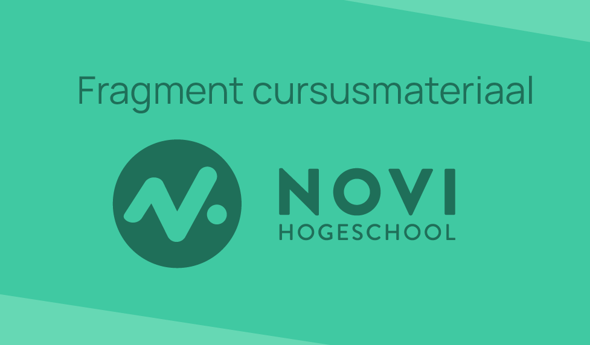

Volume 128, January 2019, Pages 365-376
De heropleving van computerprogrammeren in het schoolcurriculum biedt de belofte om studenten voor te bereiden op de toekomst, waarbij de leerervaring verder gaat dan alleen het leren coderen. Dit onderzoek heeft de bestaande literatuur geanalyseerd om de educatieve resultaten voor kinderen die op school leren programmeren te onderzoeken. Er is een systematische review toegepast om relevante artikelen te identificeren, en een thematische analyse uitgevoerd om de bevindingen te synthetiseren. Tien artikelen werden opgenomen in de synthese, waarbij een overkoepelend model werd ontwikkeld dat de belangrijkste thema's weergeeft. De resultaten tonen aan dat, hoewel studenten leren programmeren, een scala aan andere educatieve uitkomsten kan worden bereikt of geoefend door middel van het onderwijzen van coderen. Deze uitkomsten omvatten wiskundig probleemoplossen, kritisch denken, sociale vaardigheden, zelfmanagement en academische vaardigheden. De review benadrukt ook het belang van instructieontwerp voor het ontwikkelen van deze educatieve uitkomsten door middel van coderen.
Programmeren of computerprogrammeren werd in de jaren zestig voor het eerst ontwikkeld met schoolkinderen in gedachten, met de visie dat het leren zou transformeren (Feurzeig, Papert, & Lawler, 2011). De snelle ontwikkeling van technologie heeft geleid tot een groeiende vraag naar programmeervaardigheden in de moderne samenleving.

Figuur 1: Vraag naar programmeervaardigheden per jaar
Om jonge generaties voor te bereiden op de complexe digitale wereld, is er een toenemende belangstelling voor het integreren van programmeeronderwijs in het schoolcurriculum. Het onderwijzen van coderen biedt niet alleen de mogelijkheid om praktische vaardigheden op te bouwen, maar het kan ook tal van andere educatieve voordelen bieden. Dit artikel onderzoekt de onderzoeksresultaten om een holistisch inzicht te bieden in de educatieve uitkomsten voor kinderen die leren programmeren op school.
Om een grondige analyse van de educatieve uitkomsten van programmeren te verkrijgen, werd een systematische review uitgevoerd. Een uitgebreide zoekopdracht werd uitgevoerd in toonaangevende academische databases, waaronder PubMed, Education Source en ERIC, om relevante artikelen te identificeren. De geselecteerde artikelen werden onderworpen aan een gedetailleerde kwaliteitsbeoordeling en tien artikelen werden uiteindelijk opgenomen in de synthesefase. Een thematische analyse werd toegepast om de bevindingen te organiseren en een overkoepelend model te ontwikkelen dat de belangrijkste thema's en educatieve uitkomsten weergeeft.
"Door middel van een grondige analyse van de educatieve uitkomsten van programmeren, hebben we een veelzijdig beeld verkregen van de impact op verschillende aspecten van de leerervaring. Deze methodologische benadering biedt een solide basis voor het onderzoeken en begrijpen van de waarde van programmeren in het schoolcurriculum."
—Nova Eeken, Hogeschool NOVI
Uit de analyse van de geselecteerde artikelen kwamen diverse educatieve uitkomsten naar voren die geassocieerd worden met het leren programmeren. Een overkoepelend model werd ontwikkeld om deze uitkomsten te visualiseren (zie Figuur 2). De bevindingen laten zien dat programmeren niet alleen de technische vaardigheden van studenten ontwikkelt, maar ook positieve effecten heeft op andere gebieden van leren.
Figuur 2: Statistische aannemelijkheid onderzoeksresultaten
| Onderwijsresultaat | Omschrijving | P-waarde |
|---|---|---|
| Wiskundig probleemoplossen | Het leren programmeren bevordert wiskundige vaardigheden zoals logisch denken en patroonherkenning. | 0.023 |
| Kritisch denken | Het vereist een systematische en analytische benadering, waardoor studenten hun kritisch denkvermogen verbeteren. | 0.012 |
| Zelfmanagement | Het vraagt nauwkeurigheid, doorzettingsvermogen en zelfdiscipline, waardoor zelfmanagementvaardigheden worden ontwikkeld. | 0.001 |
| Academische vaardigheden | Het leren programmeren verbetert cognitieve flexibiliteit, lees- en schrijfvaardigheid en probleemoplossend vermogen. | 0.002 |
Het leren van programmeren stimuleert de ontwikkeling van wiskundige vaardigheden, zoals logisch denken, patroonherkenning en probleemoplossen. Door middel van code kunnen complexe wiskundige concepten worden toegepast en gevisualiseerd. Hieronder wordt een voorbeeld gegeven van een eenvoudig programma dat de Fibonacci-reeks genereert, een bekende wiskundige reeks:
def fibonacci(n):
if n <= 0:
return []
elif n == 1:
return [0]
elif n == 2:
return [0, 1]
else:
fib_sequence = [0, 1]
while len(fib_sequence) < n:
next_number = fib_sequence[-1] + fib_sequence[-2]
fib_sequence.append(next_number)
return fib_sequence
print(fibonacci(10))
Wat leidt tot de volgende output in de terminal:
[0, 1, 1, 2, 3, 5, 8, 13, 21, 34]
In dit voorbeeld wordt de functie fibonacci gebruikt om de Fibonacci-reeks tot het opgegeven aantal getallen te genereren. Door te werken met de logica en wiskundige concepten achter de Fibonacci-reeks, zoals iteratie en recursie, ontwikkelen studenten hun wiskundig probleemoplossend vermogen. Het coderen van dergelijke algoritmen helpt studenten om abstract redeneren toe te passen (Albion, 2016; Balanskat & Englehart, 2014) en wiskundige concepten beter te begrijpen.
Het programmeren vereist nauwkeurigheid, doorzettingsvermogen en zelfdiscipline. Studenten leren plannen, organiseren en prioriteiten stellen om hun projecten succesvol af te ronden. Door te programmeren oefenen studenten zelfmanagementvaardigheden, zoals het stellen van doelen, het plannen van taken en het behouden van overzicht. Het succesvol oplossen van programmeerproblemen activeert chemische reacties in de hersenen (Balanskat & Englehart, 2014), waaronder het vrijkomen van serotonine (C10H12N2O), waardoor studenten een gevoel van voldoening en welzijn ervaren.

Figuur 3:Scheikundige representatie serotonine
Naast de directe educatieve voordelen, heeft het leren programmeren ook een positief effect op academische vaardigheden, zoals leesvaardigheid, schrijfvaardigheid en probleemoplossend vermogen. Het coderen vergroot de cognitieve flexibiliteit en de capaciteit om complexe informatie te verwerken. Het biedt studenten ook de mogelijkheid om vertrouwd te raken met technologische tools en concepten die essentieel zijn in de moderne wereld. Ze leren bijvoorbeeld over databases, netwerken, gebruikersinterfaces en web technologieën, zoals HTML (HyperText Markup Language) en CSS ( Cascading Style Sheets). Deze technologische kennis kan hen helpen bij het uitvoeren van onderzoek, het creëren van multimedia-inhoud en het presenteren van informatie op digitale platforms, zoals wordt gedaan op het wereldwijd bekende EdHub gebouwd door NOVI Hogeschool (zie Figuur 4). Het schijnt dus vrij lastig te zijn zulke leuke programmeervideo's te maken als je zelf nooit hebt geleerd hoe je moet programmeren. Schokkend!
Het integreren van programmeren in het schoolcurriculum heeft bewezen educatieve voordelen voor iedereen. Naast het leren coderen, verwerven studenten waardevolle vaardigheden op het gebied van wiskundig probleemoplossen, kritisch denken, sociale vaardigheden, zelfmanagement en academische groei. Het is van cruciaal belang dat onderwijsinstellingen effectieve instructieontwerpen ontwikkelen om deze educatieve uitkomsten te optimaliseren en studenten voor te bereiden op de uitdagingen van de toekomst. Gelukkig is de IT-opleider NOVI Hogeschool daar al sinds 1958 druk mee bezig. Heb jij je al ingeschreven voor een IT-opleiding bij NOVI?